来源：https://b16xnqwk20.feishu.cn/docx/Hge9dTZsTour1Txz7eJcy749nsg
全文4200字
推荐用时：4min
首先很感谢大家支持，有机会能在生财分享，我是宋老师（账号：宋老师帮你做课）
目前是全网做课卖课赛道头部，年变现800万+，5000多学员中200多位变现100万+。
而这一年我所做出的成绩，其实都是靠一套我跑通的知识博主流量➡变现闭环系统。
这套系统的打法，也是我今天要分享的主要内容。
很多抖音、小红书做知识付费的小伙伴可能知道我，再简短的自我介绍一下，便于大家快速知道我的价值：
我的四个标签：
1.目前自媒体头部的做课&卖课博主→流量能力
2.原来的新东方总监，最高记录同步管理80w学生社群→教学能力
3.6000多位知识博主的老师→成绩
4.很多百万博主背后做课的男人
今天我想要分享的这套知识博主流量➡变现闭环系统有几个优点：
1.IP工作轻。
不直播，批量产出视频，解放IP。IP有更多时间研究内容，开拓新市场；
2.变现标准化、自动化。
流量、转化、社群运营、私域运营全套SOP，打造自动化高卖课高复购变现系统；
3.全套系统可复制。
这点最重要。就是这套打法，我们也成功在几千位学员身上做到了复制，并且帮他们拿到了很好的结果。
今天的分享本来是我线下闭门会的付费内容。
不过作为曾经的新东方教育人，让更多老师的知识更值钱，也一直是我的执念。
加上自己也在生财学到太多干货，结交太多大佬。
所以今天，还是毅然决定把这些真正有价值的干货分享出来，希望能帮助更多老师。
时间关系，今天先和大家分享几个拿到就能直接用的实操关键点。
以后我会逐步更新，分环节把整个系统和大家分享。需要的老师可以持续关注
今天的分享分为以下几个板块：
（大数据爆款爬取+AI批量输出文案+如何用8000抖加撬动800万收入）
（导流钩子+30%高转化率sop拆解）
不管是还没起号的新手老师或者已经拿到结果的知识博主，流量焦虑都是永远的心魔
尤其是在抖音平台已经进入流量平台的今天，很多头部博主的流量都已经有了下滑趋势
而就在这一片红海中
我自己的新账号，7月26日起号，第3天开始卖课变现，目前每天稳定卖课2000＋
同样打法复制的十几个账号，变相周期最长10天

为什么我能这么快跑通流量➡变现的闭环？
其实就是靠一套低粉爆款选题+AI文案矩阵打法
先说下这套打法原理：
抖音目前8亿日活，其中近一半的创作者
小红书也有2亿创作者
可以说目前所有能爆的选题，都已经有人拍过了
那我们不管是想要从新起号或者想要实现流量突破，
最简单最省力的方法就是批量输出这些爆款选题内容
尤其是低粉爆款选题
用被数据验证过的低粉爆款选题保证高爆款概率，在高爆款概率基础上AI批量输出文案，打破流量层级
比如天耀老师，小红书1.2万粉丝。关于AI神器的选题，接连出两个大爆款
我写的知识博主AI神器的选题，同样也成了5700赞的爆款

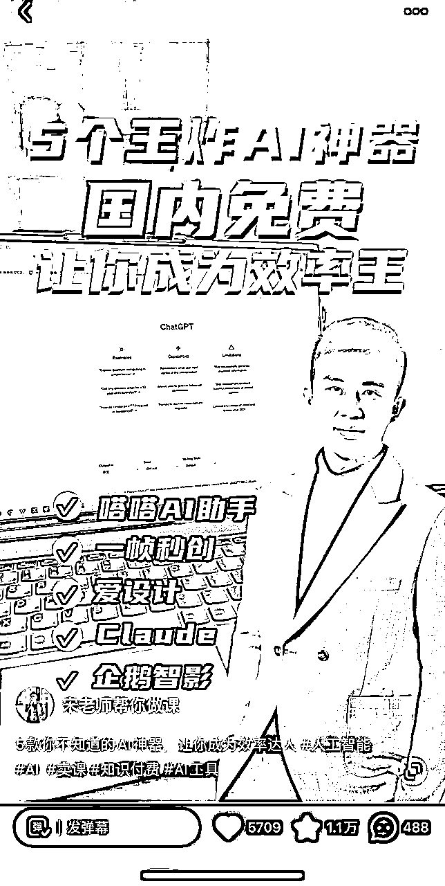
那首先到底什么是低粉爆款？
现在各位老师都已经被各种抖音培训课洗过不止一遍
可如果较真说概念，到底什么是低粉爆款选题，真的没几个人能说对
有的甚至认为点赞最少也得1000以上才算是爆款
这在泛娱乐赛道是对的
但在知识付费赛道真的大错特错
对很多知识付费赛道，200赞已经可以算是爆款选题
而一条200赞的视频，就能给你带来上万的收入
第一类：博主低粉丝量，某选题视频数据远超同量级博主
第二类：某选题视频数据远好于博主其他视频
举例1：5000粉丝，小红书一般视频数据20点赞左右。
但成斌老师三条身心灵选题视频连爆破百赞⬇


举例2：鹿大米老师视频一般几十赞
读书博主选题的视频大爆9600个赞，而且多矩阵号都爆，典型的低粉爆款选题


这样的选题如果你写不爆，大概率是你的文案、封面、剪辑有各种各样的问题
一定像素级拆解学习
知道了到底什么是低粉爆款选题,
那怎么批量找出大量低粉爆款选题？
你当然可以人工花几天刷遍同行几千个视频
不过今天介绍一个数据爬取神器和数据处理黑科技
教你一分钟找100个低粉爆款选题
直接上实操，以小红书为例：
（下载链接：https://www.houyicaiji.com/）

安装好后如图：
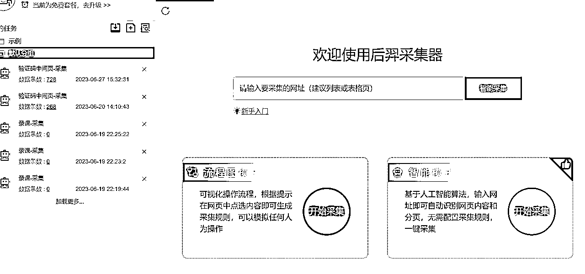
打开手机端小红书，搜索赛道关键词，
在视频最下方tag里找到关键词
比如#知识付费
复制链接
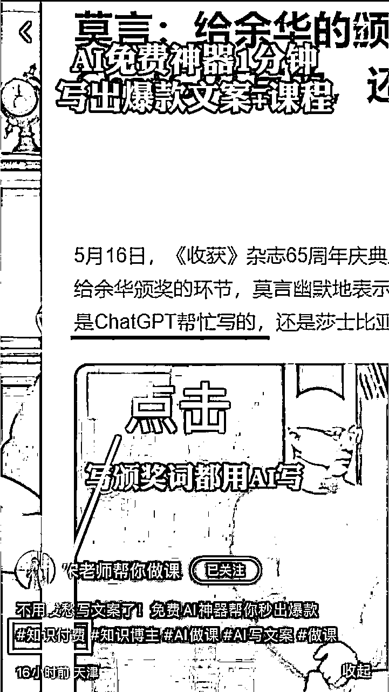
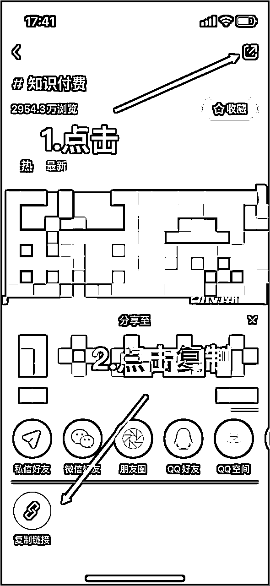
粘贴到采集器采集数据
结果可以看到有该选题下所有视频的标题、链接、封面、点赞等数据
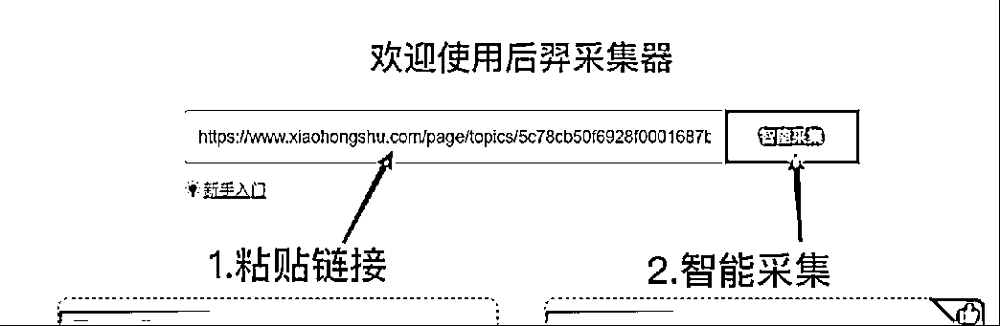
结果展示
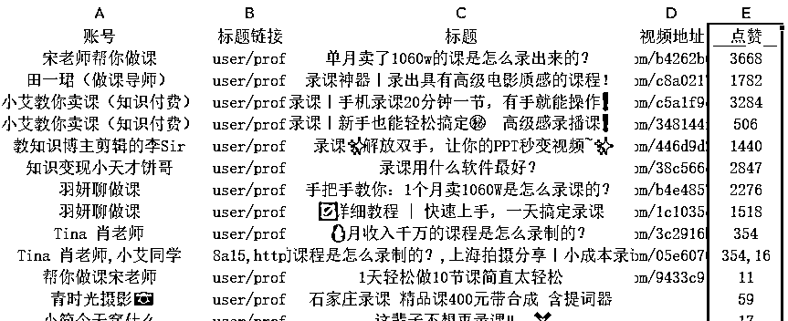
如果使用深度采集功能
还可以直接采集到博主粉丝数和视频的发布日期
不过这个有点复杂，全写出来太长了
想深入学的可以自己搜一下教学或者找我拿个教学视频

最后进行数据处理，就能轻松看到某个选题下所有近期低粉爆款选题
详细操作看图

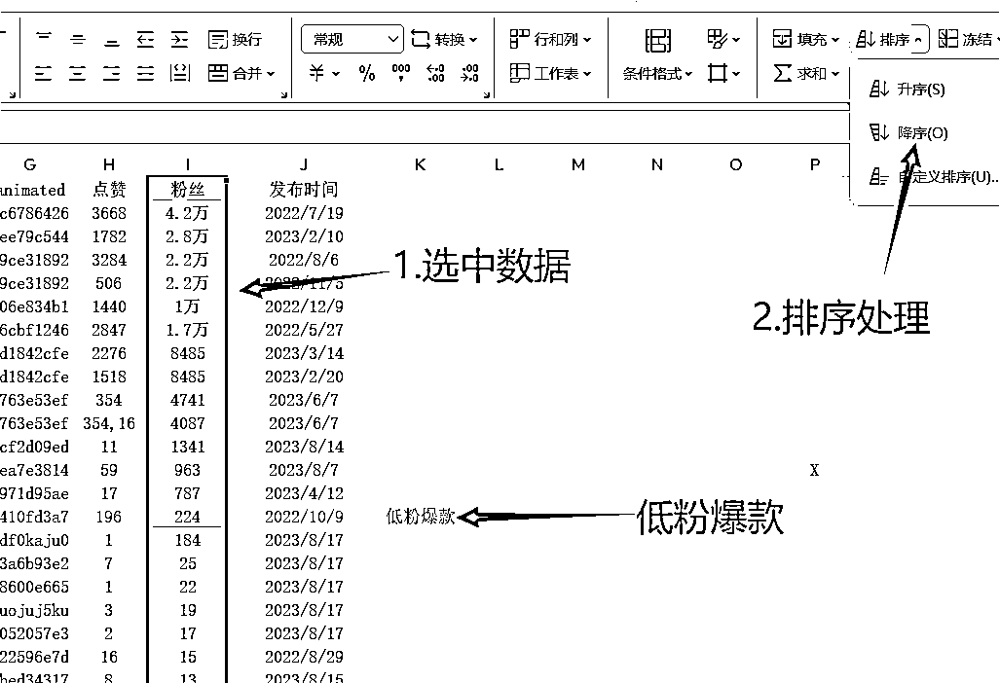
我自己用这套方法，就是一天集中完成10个账号一周的内容，彻底把自己解放出来。

有了选题怎么批量输出文案
再好的写手也有枯竭的时候，但是AI却能做到随时输出，而且永久持续输出
不管你是要直接让AI按选题输出文案，还是仿写爆款文案，或者按你的文案风格改写爆款
几个指令就能解决你所有文案问题
具体的各位老师可以看我写的《AI文案爆款宝典》，有详细的教学
使用的时候直接复制里面的指令即可
选定爆款文案后直接让gpt仿写文案

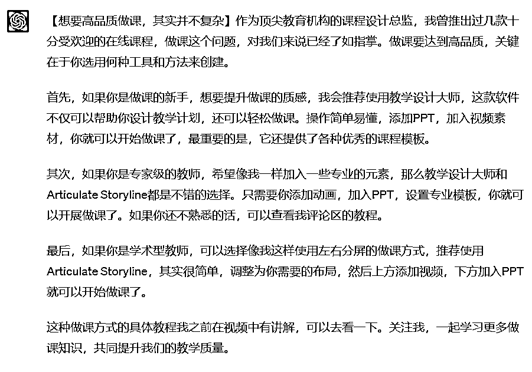
将别人的爆款文案按照自己的文案风格改写


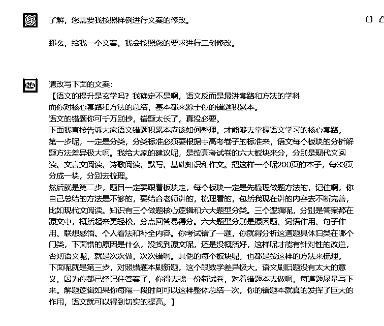
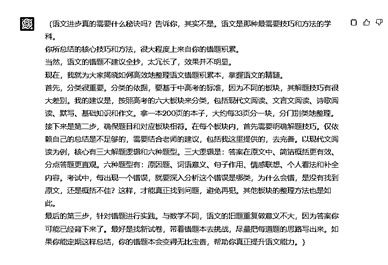
我大号10万粉丝，只投了不到8000块，撬动了800万的收入
正确的投放能给你带来1000倍收益
怎么正确的投放
我用的是一套30-100-500投放法则
每天自然+投放
保底80+精准微信线索
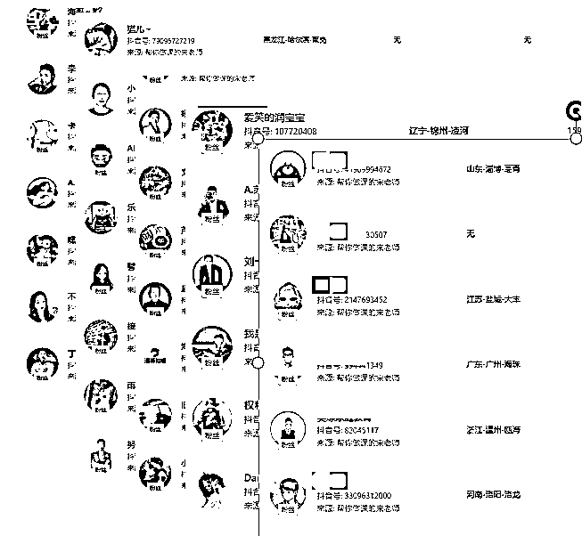
那具体怎么投
按照我们的经验，抖音真不用养号，发视频直接投就行
每个视频投放100，选择对标，点赞评
之后需要进行实时数据监测
投放跑完30元后，如果投放数据可以达到粉丝转化1:1,点赞转化1：2-3（对应数据要看赛道）
也就是视频既有流量能力又有转粉能力，则可以继续跑完剩下的70
如果数据依然在标准线，则可以再次投放100，对标，点赞评
如果转粉、点赞还能达到之前80%的标准线，
直接追投500粉丝
有了这一个爆款的撬动，你的账号基本就可以成功起号了
由于我们的内容都是有爆款潜力
5-7条视频应该可以起一条爆款
测算综合成本，用这套投放逻辑，单账号起号花费会在1300-1700
而知识付费赛道一条百万播放视频带来的短期收益，最少也在2-3万
正确投放真的可以让你百倍收益
我从第66个粉丝开始卖课变现
不开直播只用短视频，一年变现近8位数，就是用这套钩子打法
这套打法分两部分：
钩子引流+高转化SOP变现
我每天早上一醒，第一件事就是先通过微信好友申请
同时抖音后台每天也还有至少120个微信等我去添加
就是靠导流钩子
【线索版图片】
说穿了很简单，能把粉丝勾到私域的利益点就是钩子
你的资料、入门课、10分钟的小咨询，都可以变成钩子
比如我就有一个钩子库，里面几十个钩子文件
就靠这些资料钩子我才能卖课800万

下钩子要全方位的下
主页介绍、文案、评论区
所有能埋钩子的地方都要放
但注意最近平台对导流行为审核越来越严格
所以下钩子一定也要隐晦一些
分享几个我一直在用的文案钩子：
还有不会的，可以看我的AI闪电做课秘籍
找不到的老师吱个声，直接拿就行
不会操作的老师，可以看这个详细教程
……
总之文案里下钩子一定要隐晦一些
另外钩子要下在文案的中间部分
因为首尾都容易被审核员发现，而被判违规
简单说几个做钩子的小技巧：
1.要有核心钩子，体现价值
你每个课程要有对应的核心钩子
内容应该是课程内容的40%，其中有10%的核心内容
比如我的闪电做课营的钩子
就透露了一些核心的AI做课指令，才能体现你内容的价值

2.做好导流内容
微信水印、二维码、导流话术，文件里面该安排的全安排上
3.做好防盗
不止课程有盗版，偷你钩子的人也很多
钩子一定做pdf格式
文件密码、编辑密码、水印也都安排上
4.非核心钩子不要提前做
做钩子其实还是要花一些时间的
所以先写文案、发视频
来要钩子的人多，再做资料也来的及
钩子的部分，不做过多赘述了，详细制作流程可以参考这篇分享
《用【钩子打法】1年引流30000私域粉，卖课300w是什么体验！（附钩子制作全流程）》
流量有了，私域人也加了
终于到了最关键的转化变现的环节
加了粉丝不会聊，要不人家根本不回，要不就是几句话就把天聊死
这是很多老师的核心痛点
我们能做到30%的转化率。核心就是靠一套标准转化SOP
从第一句说什么到1分钟判断需求、如何5分钟内成交
每句话每个问题怎么回答，我们都有标准答案
做转化，第一句话是关键
他决定你们后续对话能不能顺利进行
所以破冰话术一定要打磨
我们的破冰现在有一整套逻辑：
第一步--建立信任
简短一些，说明白自己核心标签，少就是多
他们都是从各个平台加到你，可能看的是大号，也可能是几千粉丝的小号
所以人设还是要包装
“我是宋老师，全网做大知识付费做课卖课博主，头部教育公司总监”
第二部--给福利
这里福利其实就是刚才钩子部分
注意这里钩子可以设置一个密码
想看的人自然会和你要密码，密码都不要，意向不会太高
这是第一次意向筛选
而且“拿人手短”，拿了你的资料，自然好继续对话
第三--跟进回复
这里要是一个很简单的小问题
用问句打开回复，这里是你们对话的开始
比如我最常问的就是：你是做什么课程
这里注意能用语音就用语音，更有利于信任建立和亲切感塑造
那破冰之后怎么5分钟卖课
我之前有详细的做过私域内容的分享
大家可以移步精华帖：
《30天私域卖课60w是什么样的体验？》
这里就不赘述了
最后流量和变现已经全部跑通
但赛道才是真正决定你变现的天花板
这一年我最大的感受就是选择真的大于努力
所以最后和大家分享几个不起眼但是卖课轻松超百万的案例
所有的案例都是我营里的学员
希望他们能对大家有所启发
这类赛道人群小而精
做的多是“老板粉”，优势是相对于一般人群有着更好的付费能力
同时结合本地团购直播开展，双线并行
不但可以引流到店服务，还能通过知识付费课程引流同行，赋能同业

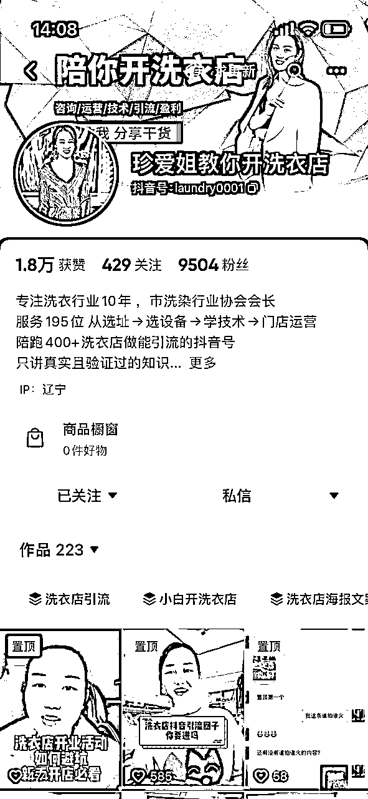
这类课程永远是最适合普通人做的赛道
优点是课程制作简单没有门槛
但同样变现能力相对较低、天花板低
尤其适合作为副业操作

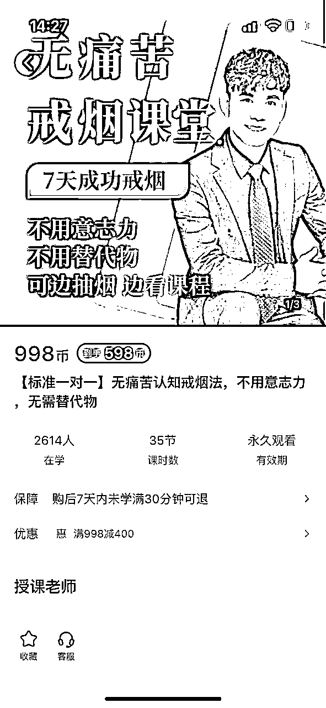
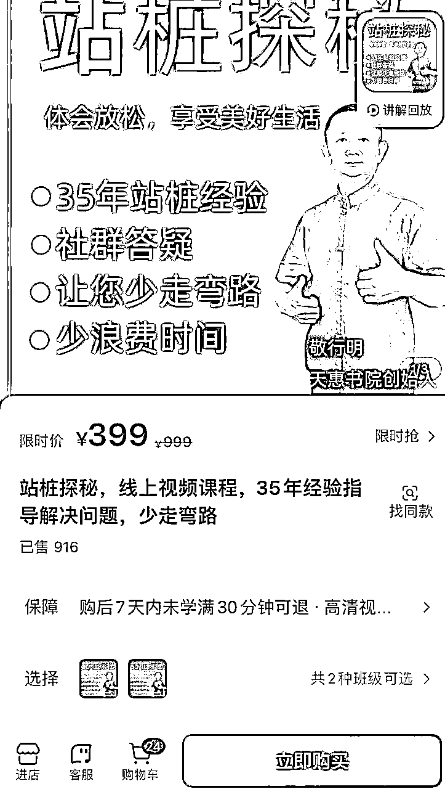
视频号作为今年的流量风口
银发赛道一定是今年最有变现潜力的赛道
目前引发赛道的视频号打法普遍是素材混剪+矩阵分发+多账号直播导流+群转
基本单账号产出目前可以到达五位数
这里就不方便讲太多了，大家有兴趣可以研究下
绝对是今年的黄金赛道


好了，今天的分享就到这，无论你是企业老板还是个人博主，
其实我觉得知识付费都是一门极低成本，极高收入的好事
这个行业的利润在75%以上
老板可以做课程，输出你的产品或者管理思维，用课来征服合作伙伴
个人博主可以做课程增加收入，提高粉丝粘性和后端合作
每一个有长远发展的IP，一定离不开一个自动赚钱的【知识博主流量➡变现闭环系统】
未来写书的人会越来越少，做课的人会越来越多，同样是社交名片，动态的会比静态的前景更大。
希望大家，2023，做课生财，感谢各位老师。
我是宋老师，23年帮助500位老师卖课50w，欢迎和我一起做课生财！